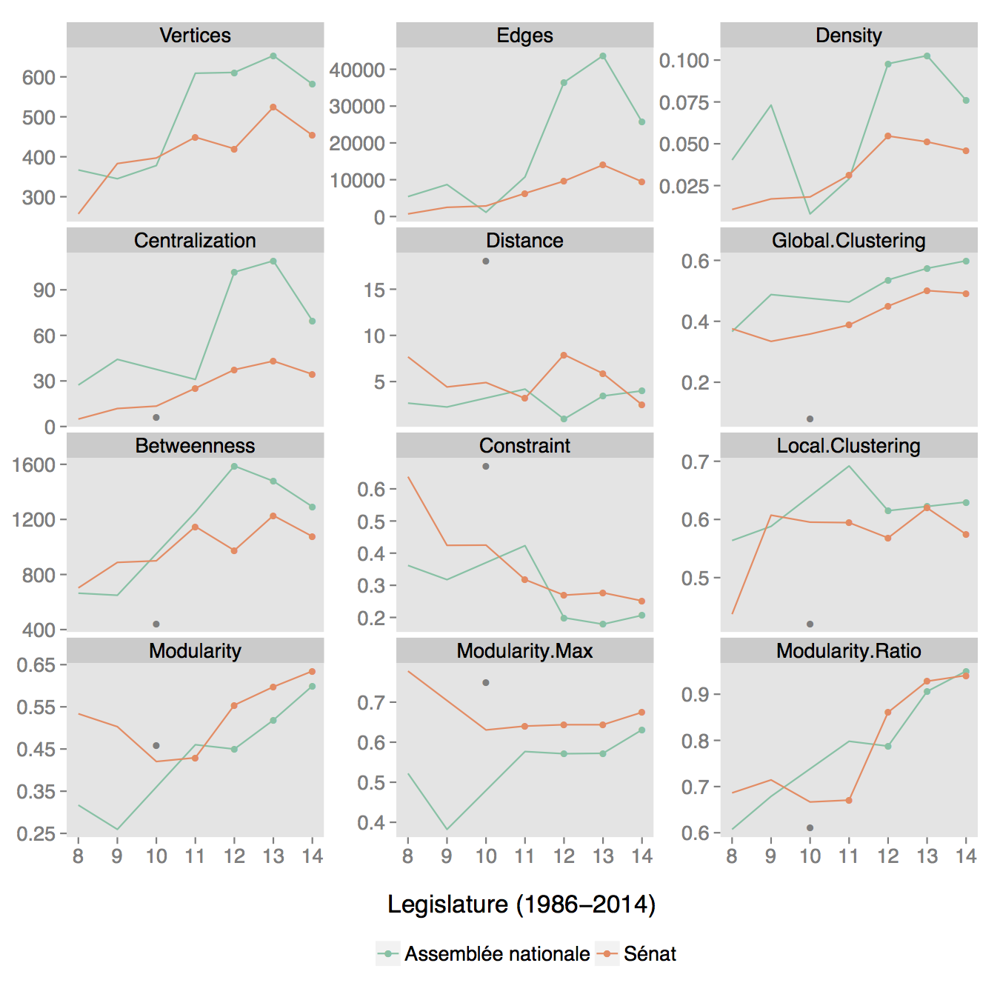

Legislative Cosponsorship Networks
neta is a set of R functions to
- scrape amendments, bills and resolutions from the Assemblée nationale,
- extract similar data out of the SQL databases from the Sénat open data portal, and
- build each parliamentary legislature since 1986 into a cosponsorship network, and
- estimate party polarization in each legislature using a latent space model.
The code and data live at github.com/briatte/neta.
An interactive visualization is at briatte.org/sigma.
Period: 7 legislatures / 27 years
| Legislature | Prime Ministers | |
|---|---|---|
| 8 | 1986-1988 | Chirac, Rocard |
| 9 | 1988-1993 | Rocard, Cresson, Bérégovoy |
| 10 | 1993-1995 | Balladur |
| 1995-1997 | Juppé | |
| 11 | 1997-2002 | Jospin, Raffarin |
| 12 | 2002-2007 | Raffarin, Villepin, Fillon |
| 13 | 2007-2012 | Fillon, Ayrault |
| 14 | 2012- | Ayrault |
Years colored by left-wing and right-wing party affiliations.
Data sources: Assemblée nationale for the Sycomore MP index and online files, Data Sénat for the Ameli and Dosleg databases, and Sénat for senator details. The raw data scraped until April 6, 2014 (1.2 GB, 30,000 files) is available per request.
Sample: N ~ 100,000
| Chamber | Amendments | Bills |
|---|---|---|
| Assemblée nationale | 60,008 / 121,908 (49%) | 4,670 / 8,863 (52%) |
| Sénat | 36,160 / 104,452 (34%) | 2,194 / 3,800 (57%) |
| Assemblée nationale, 1986–1988 | Sénat, 2012– |
Each network is a weighted one-mode projection of the dyads formed by all legislation first authors to each of their nominal cosponsors (excluding group signatures) over the complete legislature. Tie construction matches Fowler (2006) and edge weighting matches Gross, Kirkland and Shalizi (2012).



| Assemblée nationale, 1986–1988 | Sénat, 2012– |
Two-dimensional latent space cluster models with random receiver effects, using the same number of groups as there were parliamentary groups in the legislature. Unfilled circles indicate cluster means and variance, and node size is proportional to likelihood of cluster membership.
| Assemblée nationale, 1986–1988 | Sénat, 2012– |
Sample of cluster configurations estimated over 2,000 MCMC draws, showing variations in the Minimum Kullback-Leibler estimates of positions in the latent space of cosponsorships. Node colors do not match true membership (parliamentary group) colors.